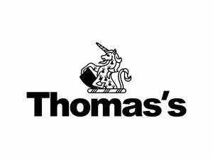
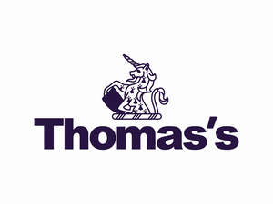
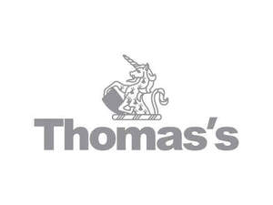

Trade Mark Journal No.2025/044 31 October 2025
UK00004281402 21 October 2025 (9,16,18,21,25,26,28,35,39,41)
Mark 1

Mark 2

Mark 3

- Class 9
- Downloadable educational course materials; Downloadable educational media; Educational computer applications; Education software; Educational mobile applications; Downloadable publications; Downloadable e-books; Downloadable podcasts; Eyewear; Sunglasses; Cases for eyeglasses and sunglasses; Straps and chains for eyeglasses and sunglasses.
- Class 16
- Books; School yearbooks; Paper and cardboard; Printed matter; Photographs; Pictures; Stationery; Drawing materials; Writing materials; Instructional and teaching materials; Educational publications; Educational and instructional material; Educational equipment; Bags made of paper for packaging; Plastic films for wrapping and packaging; Packaging materials.
- Class 18
- Bags; Luggage and carrying bags; Drawstring bags; Bags for school; Backpacks; Rucksacks; Toiletry bags; Bags for sports; Boot bags; General purpose sport trolley bags; Waist pouches; Waist bags; Belt pouches; Wallets; Purses; Straps for coin purses; Coin holders; Umbrellas; Umbrella covers; Parasols; Luggage covers; Luggage label holders; Lockable luggage straps.
- Class 21
- Water bottles; Drinking bottles; Covers for water bottles; Reusable stainless steel water bottles; Reusable plastic water bottles sold empty; Insulated vacuum bottles; Insulated flasks; Insulated mugs; Heat insulated containers; Cup holders; Mug sleeves; Insulating sleeve holder for beverage cups; Hair combs; Hair brushes.
- Class 25
- Clothing; Footwear; Headgear; Hats; Caps; Visors being headwear; Dresses; Skirts; Coats; Jackets; Raincoats; Rain hats; Sun hats; Head bands; Wrist bands; Sweat bands; Snoods; Scarfs; Earmuffs; Mittens; Gloves; Leg-warmers; Tights; Socks; Ties; Neckwear; Swimwear; School uniforms; Dance costumes; Tutus; Leotards.
- Class 26
- Hair bands; Hair scrunchies; Hair ribbons; Hair clips; Hair fasteners; Hair bows; Pins for the hair; Hair pieces; Ornaments for the hair; Hair decorations; Arm bands [clothing accessories]; Zip fasteners; Zipper pulls; Zippers; Dress fastenings; Snap fasteners; Strap buckles; Belt buckles; Laces for footwear; Charms, other than for jewelry, key rings or key chains; Embroidered badges; Button badges; Lanyards for wear; Brooches for clothing.
- Class 28
- Games, toys and playthings; Electronic educational teaching games; Footballs; Football equipment; Balls for playing sports; Gymnastic and sporting articles and equipment; Bags specially adapted for sports equipment; Gloves for sports; Playground apparatus.
- Class 35
- Retail services relating to downloadable educational course materials, downloadable educational media, educational computer applications, education software, educational mobile applications, downloadable publications, downloadable e-books, downloadable podcasts, eyewear, sunglasses, cases for eyeglasses and sunglasses, straps and chains for eyeglasses and sunglasses; Retail services relating to books, yearbooks, paper, cardboard, printed matter, photographs, pictures, stationery, educational publications, drawing and writing materials, educational supplies, educational equipment, educational, instructional and teaching materials, packaging materials; Retail services relating to bags, luggages, pouches, wallets, purses, coin holders, umbrellas, covers for umbrellas and luggages; Retail services relating to drinking bottles, flasks, mugs, heat insulated containers, cup holders, beverage sleeves, hair combs, hair brushes; Retail services relating to clothing and clothing accessories; Retail services relating to footwear; Retail services relating to headgear; Retail services relating to neckwear, swimwear, school uniforms, dance costumes, tutus, leotards; Retail services relating to hair products and hair decorations; Retail services relating to zip, dress and snap fasteners, buckles, laces for footwear, charms, badges, lanyards, brooches; Retail services relating to games, toys and playthings; Retail services relating to balls for playing sports, gymnastic and sporting articles and equipment, sporting goods, playground apparatus.
- Class 39
- Bus transport services; Minibus transport services; Road transport services; Transportation of people.
- Class 41
- School services; Nursery school services; Primary education services; Secondary school educational services; Boarding school services; Boarding school education; Academic mentoring of school age children; Preparatory schools; Educating at senior high schools; Educational services provided by a school; Educational services provided for children; Academy education services; Education, teaching and training; Entertainment, education and instruction services; Conducting of instructional, educational and training courses for young people and adults; Provision of education courses; Provision of training; Summer camps [entertainment and education]; Provision of play facilities for children; Provision of educational entertainment services for children in after school centres; Entertainment, sporting and cultural activities; Organisation of competitions for education or entertainment; Organising of sports and sports events; Providing facilities for sporting events, sports and athletic competitions and awards programmes; Arranging for students to participate in educational courses; Career counselling [education]; Career advisory services (education or training advice); Providing on-line publications (not downloadable).
Thomas's London Day Schools Limited
Representative: Edwin Coe LLP